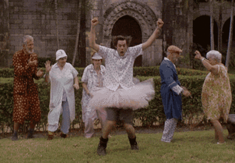
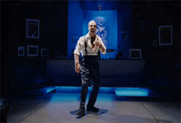

- Recent
- Undecided Importance
- Inconsistent
- Fix Committed
- Incomplete
- Stale Incomplete
- Stale In Progress
- Patch
- Old Wishlist
- Celebrate
Task1: The list below shows the recently created bug reports.
-
{% for b in recent_reports %}
- {{ b.link }} {{ b.title }} ({{ b.age }} days old) {% endfor %}
Task2: The list below shows the confirmed and
triaged bug reports
without an importance.
-
{% for b in undecided_reports %}
- {{ b.link }} {{ b.title }} ({{ b.age }} days old) {% endfor %}
Task3: The list below shows bug reports which are inconsistent.
Bugs with an assignee should be In Progress. Bugs
which are In Progress but do not have an assignee
should be set back to confirmed (or new).
-
{% for b in inconsistent_reports %}
- {{ b.link }} {{ b.title }} ({{ b.age }} days old) {% endfor %}
Task3 b: The list below shows bug reports in the state
Fix Committed. Since the Mitaka cycle we use the
direct release model, which means those bug reports should have
Fix Released.
-
{% for b in fix_committed %}
- {{ b.link }} {{ b.title }} ({{ b.age }} days old) {% endfor %}
Task4 a: incomplete bugs with a response. The response should be checked.
-
{% for b in incomplete_response %}
- {{ b.link }} {{ b.title }} ({{ b.age }} days old) {% endfor %}
Task4 b: The list below shows bug reports which have the status incomplete for more than 30 days and are therefore potentially stale.
-
{% for b in stale_incomplete %}
- {{ b.link }} {{ b.title }} ({{ b.age }} days old) {% endfor %}
Task5: The list below shows bug reports which have the status
in progress for more than 14 days but do not have open
reviews and are therefore potentially stale.
-
{% for b in stale_in_progress %}
- {{ b.link }} {{ b.title }} ({{ b.age }} days old) {% endfor %}
Task6: The list below shows bug reports with a patch.
-
{% for b in patched_reports %}
- {{ b.link }} {{ b.title }} ({{ b.age }} days old) {% endfor %}
Task9: The list below shows the old wishlist bugs
-
{% for b in old_wishlist %}
- {{ b.link }} {{ b.title }} ({{ b.age }} days old) {% endfor %}
Task 10: Celebrate




